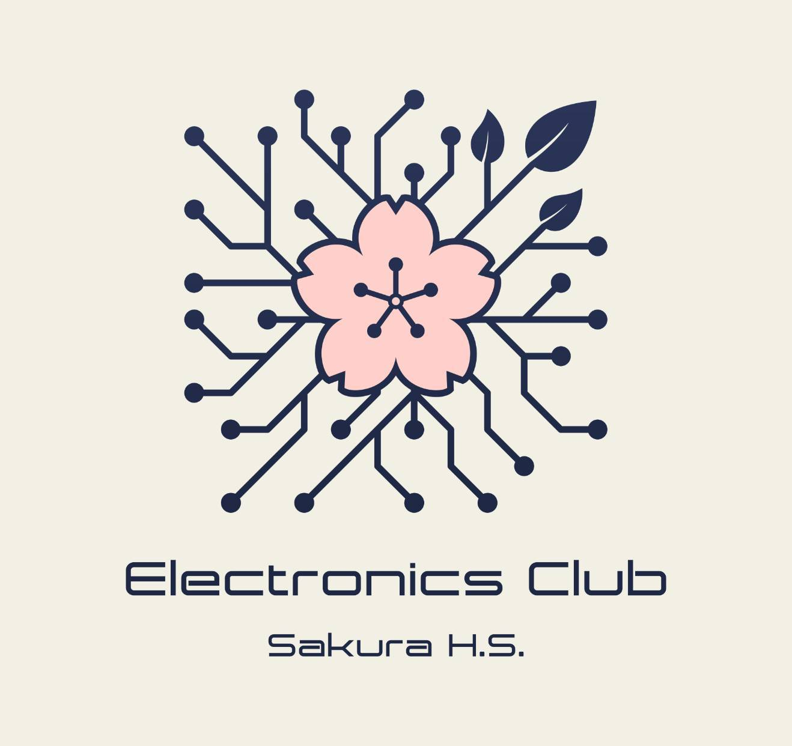
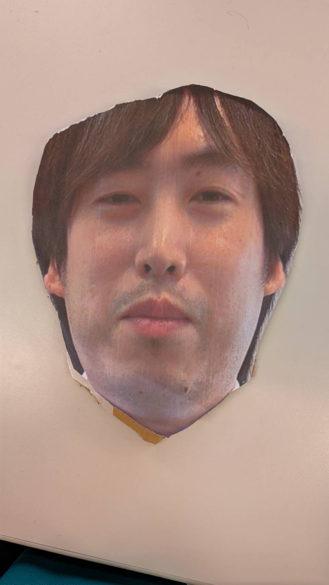
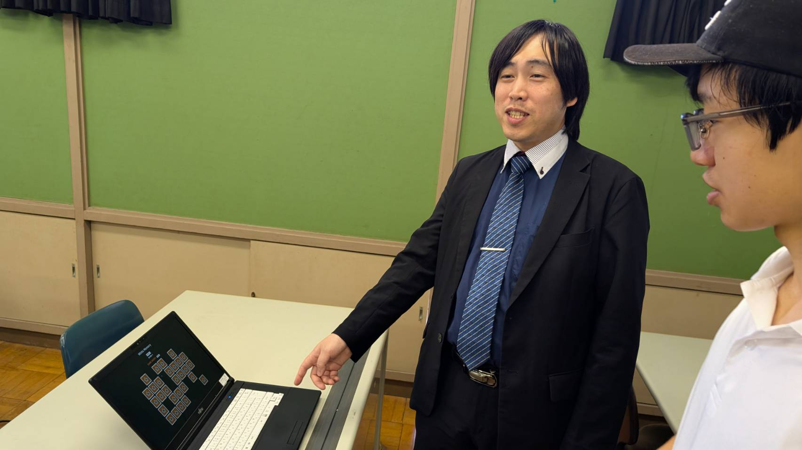
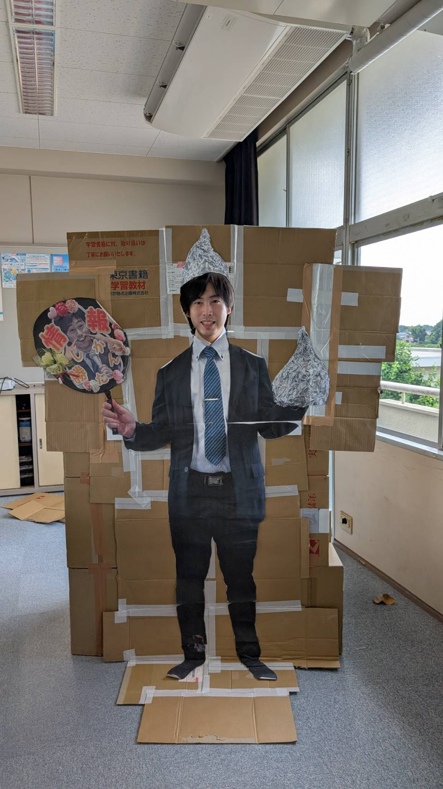

＼初心者・未経験者大歓迎！一緒に楽しむ仲間を募集中！／
こんにちは！電気部です。私たちは現在、少人数だからこそ「全員が主役」になれるアットホームな環境で、楽しく活動しています！
「高校から新しいことを始めたい」「勉強やバイトと両立したい」という人にぴったりの部活です。
人数が少ない分、1年目から確実に試合や本番のステージで活躍できます！
今の先輩たちも、ほとんどが高校からスタートしました。イチから優しく教えます！
週2日の活動なので、勉強や塾、アルバイトの時間もしっかりキープできます。
普段の練習やイベントの雰囲気です！少人数ですが毎日楽しく活動しています。



電気部員がUnityで制作したオリジナルゲームです。
ブラウザですぐに遊べますので、ぜひチャレンジしてみてください！
※ゲームは別ページで開きます。
| 活動日時 | 毎週 月曜日と木曜日 の 帰りの会のすぐ後～最終下校まで |
|---|---|
| 活動場所 | 本館四階のパソコン室 |
| 部員数 | ★3年生：4名、2年生：300000名、1年生 : 7名 |
| 部費 | ★月0円 |
「道具を持っていないけど大丈夫？」
⇒ 最初は体験用の道具を貸し出すので、手ぶらで見学に来てOKです！
「少し興味があるだけなんだけど…」
⇒ 大歓迎です！仮入部期間だけでなく、いつでも見学・体験をお待ちしています。まずは雰囲気をのぞきに来てください！
事前連絡は不要です！活動時間内に、直接佐藤神の部屋へお越しください。
質問がある場合は、顧問の佐藤神、またはお近くの部員までお気軽に声をかけてください！